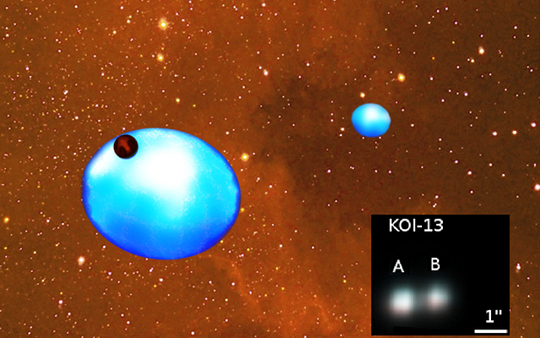
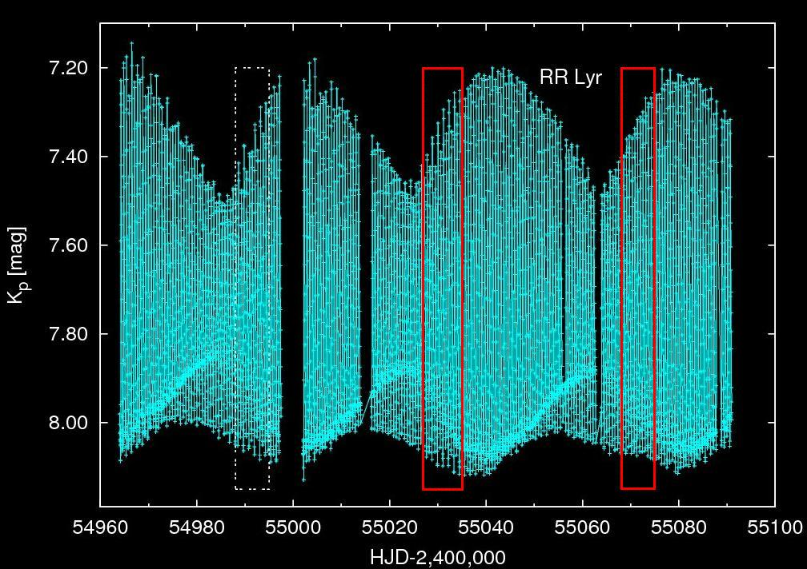

A KIK tudományos eredményei
- Gyorsan forgó csillag különös kísérővel
- Triplán fedő csillaghármas felfedezése
- Perióduskettőződés felfedezése RR Lyrae csillagokban
- A perióduskettőződés hidrodinamikai modellezése
- A modulált Kepler RR Lyrae csillagok kaleidoszkópja
- Cefeidák a Kepler-mezőben
Gyorsan forgó csillag különös kísérővel

A KOI-13 rendszer lehetséges kinézete. A két gravitációsan kötött, gyorsan forgó
szubóriás csillag egyike körül egy forró barna törpe kering.
A gyorsan forgó csillagok lapultak, pólusvidékük forróbb, mint
az egyenlítőjük. Az ilyen csillag előtt ferde pályán elhaladó bolygók vagy kis méretű kísérők
fényváltozása elméletileg jellegzetes torzulást mutat. Az első ilyen objektumot sikerült azonosítanunk a Kepler publikus adataiban.
A KOI-13 rendszert két, a Napnál valamivel nagyobb tömegű csillag alkotja, és kimutattuk, hogy a
Kepler által felfedezett tranzit a fényesebb csillaghoz tartozik. A ferde pályán keringő, fedést okozó égitest
pedig egy barna törpe, azaz átmeneti objektum a bolygók és a csillagok között.
A rendszer minden szempontból unikális: ilyen forró csillag körül nem ismertünk még kísérőt, ráadásul
minden bizonnyal egy "forró barna törperől" van szó, amely szintén egyedülálló. Először sikerült kimutatni egy barna
törpés kettős rendszerben a törpecsillag pályájának dőltségét a központi csillag forgástengelyéhez viszonyítva
pusztán a nagyon pontos fényességmérések alapján, ez pedig a bolygókeletkezési és -vándorlási
folyamatok fontos nyomjelzője. A jelenleg páratlan hármas konfiguráció fontos információt hordoz a csillagkeletkezési
elméletek érvényességéről is a kis és közepes tömegű csillagok kialakulásában.
Bővebb összefoglaló a hirek.csillagaszat.hu oldalán.
Szabó M. Gy. és mtsai 2011, ApJ, 736, L4
Torzulások egy gyorsan forgó csillag előtt áthaladó bolygó által okozott fénygörbén.
Triplán fedő csillaghármas felfedezése
Egyedülálló hármas csillagrendszert fedeztünk fel a Kepler-adatokban. A szakirodalomban mindeddig lényegében teljesen
ismeretlen HD 181068 jelű, 7.1 magnitúdó fényességű
csillagról 218 napnyi Kepler-megfigyelés, valamint földi spektroszkópiai és interferometriai mérések segítségével
kimutattuk, hogy valójában egy olyan hármas rendszer, amelyben a legfényesebb főkomponens egy vörös óriáscsillag
(HD 181068 A), körülötte pedig egy vörös törpékből álló szoros kettőscsillag kering (HD 181068 B és C). A felfedezést
az tette lehetővé, hogy a vörös törpepár 45,5 naponta eltűnik a vörös óriás mögött, közben pedig kölcsönös
fedéseket is mutat 0,9 napos periódussal. A hármas rendszernek nem hivatalosan a "Trinity"
nevet adtuk, mely a Szentháromságra utal. A Trinityhez hasonló hierarchikus hármas rendszerek a csillagkeletkezés és
-fejlődés fontos tesztobjektumai, a most talált csillag különleges konfigurációja pedig emberi időskálán is
mérhető változásokat okoz a csillagok pályaelemeiben. Érdekes módon a szinte minden vörös óriáscsillagra jellemző
naptípusú oszcillációk helyett a Trinity főcsillagánál a BC pár gerjesztette rezgésekre utaló jeleket találtunk.
Lásd még a sajtónyilatkozatot.
Derekas és mtsai 2011, Science, 332, 216

A HD 181068 három komponense méretarányos ábrázolásban. Az A jelzésű csillag Napunknál 12,4-szer
nagyobb vörös óriás, kísérői a Naptól kisebb törpecsillagok.
D. Huber (Univ. of Sydney)

A HD 181068 rendszer mozgását és fényváltozását mutató animáció.
A lejátszáshoz kattintás a képre.
D. Huber (Univ. of Sydney)
Perióduskettőződés felfedezése RR Lyrae csillagokban
Az egyik legújabb eredményünk a perióduskettőződés felfedezése
néhány Kepler RR Lyrae csillagban, köztük magának az RR Lyrae-nek, a típus névadójának a fényváltozásában.
Ez az első eset, hogy ezt a dinamikai jelenséget RR Lyrae csillagokban valaha is megfigyelték. A
perióduskettőződés váltakozó nagyságú maximumok és minimumok formájában jelentkezik, a frekvenciaspektrumban
pedig a fő pulzációs frekvencia és harmonikusai között félúton jelentkező fél-egész frekvenciák utalnak a
jelenlétére. Érdekes módon az összes periódus-kettőződést mutató csillag egyúttal Blazsko-modulált is.
Az effektus a modulációs ciklus bizonyos fázisaiban erősebbnek mutatkozott. Ezek az eredmények a
perióduskettőződés és a rejtélyes Blazsko-moduláció szoros kapcsolatára utalnak, így az új
jelenség vizsgálata közelebb vihet az évszázados Blazsko-rejtély megoldásához is. Eredményeinket a
NASA és a KASC sajtókonferenciáján
is bemutatták Aarhusban (Dánia) 2010. október 26-án.
(bővebben).
Kolenberg és mtsai 2010, ApJL, 713, 198
Szabó és mtsai 2010, MNRAS, 409, 1244

Perióduskettőződés az RR Lyrae nevű csillagban. Az ábrán az RR Lyrae 127 nap
hosszúságú Kepler-fénygörbéje látható. Az egyedi pulzációs ciklusok nehezen különböztethetők meg, de feltűnő a
kb. 40 nap hosszúságú Blazsko-moduláció. A perióduskettőződés az első két modulációs ciklus
meghatározott fázisaiban jelentkezik legerősebben, de a harmadik ciklusban nem látszik. A pirossal kiemelt két
szakasz kinagyítva a következő ábrán tekinthető meg.

Perióduskettőződés. Az RR Lyrae nevű csillag fénygörbéjének
két szakasza látható, mégpedig azonos Blazsko-modulációs fázisnál. A moduláció miatt mindkét esetben nő
a pulzáció amplitúdója. Azonban míg a bal oldali esetben erős perióduskettőződés látható, a
másik esetben feltűnő ennek hiánya. Az eltérés oka ismeretlen.
A perióduskettőződés hidrodinamikai modellezése
A java azonban még csak ezután következett. A Florida-Budapest hidrokóddal sikerült reprodukálnunk a
periódus-kétszerező bifurkációt nemlineáris RR Lyrae modellekben. Ez lehetővé tette, hogy
megtaláljuk az RR Lyrae-kben fellépő perióduskettőződés okát. Bizonyítottuk,
hogy a jelenség hátterében az alapmódus és a kilencedik radiális felhang között fellépő 9:2 arányú
rezonancia áll. A magas rendű felhang egyben egy strange módus. A rezonancia meglepően erősnek
bizonyult, annak ellenére, hogy ezen rezonanciák hatását mindeddig elhanyagolták. Az eredményeink arra mutatnak, hogy
a radiális és feltehetően a nemradiális módusok is komplex kölcsönhatásokat mutathatnak, és ezek szerepet játszhatnak
a Blazsko-effektus létrejöttében is.
Kolláth,
Molnár, Szabó, 2011, MNRAS, közlésre elfogadva
A modulált Kepler RR Lyrae csillagok kaleidoszkópja
Huszonkilenc Kepler RR Lyrae csillagot analizáltunk. Közülük 14 Blazsko-modulált: mind amplitúdó-, mind
fázismoduláció megfigyelhető esetükben. A Blazsko-periódus 28 naptól több mint 200 napig terjed.
A Kepler soha nem látott pontosságú fotometriája segítségével felfedeztük a legkisebb amplitúdójú Blazsko-modulációt.
A pulzációhoz tartozó frekvenciák és a moduláció miatt fellépő multipleteken kívül további frekvenciákat találtunk.
Négy csillagban ezek a frekvenciák közel vannak az első és/vagy a második felhang frekvenciájához. Ezen
frekvenciák amplitúdója a Blazsko-ciklussal változik. Az egyik Blazsko-modulációt nem mutató csillag, a V350 Lyrae
az első olyan kétmódusú csillag, amely az alapmódusban és a második felhangban pulzál.
Benkő és mtsai.,
2010, MNRAS, 409, 1585

Blazskos RR Lyrae csillagok a Kepler-mezőben. A moduláció erőssége, alakja és
periódusa tekintetében nagy változatosságot figyelhetünk meg a csillagok fényváltozásában. A moduláció eredete
azonban a mai napig nem tisztázott.
A Kepler-űrtávcső indítása előtt 40 cefeidajelöltet válogattunk a Kepler által megfigyelt
területen, korábbi égboltfelmérések eredményei és elérhető adatbázisok alapján. A jelöltekről kapott 322 napnyi
Kepler-megfigyelést elemeztük, és a vizsgálatokat földi spektroszkópiai és többszín-fotometriai mérésekkel
egészítettük ki. Mindezek együtt megerősítették, hogy a V1154 Cygni valóban egy 4,9 napos periódussal pulzáló
cefeida. A fáziskésés módszerét alkalmazva megállapítottuk, hogy a csillag az alapmódusban pulzál. Az új
radiálissebesség-adatok jó egyezésben vannak a régebbi mérésekkel, és valószínűtlenné teszik hosszú
keringési periódusú kísérő jelenlétét. Az ultra-precíz, csaknem folyamatos Kepler-adatsorban nem találtunk
nemradiális vagy sztochasztikusan gerjesztett módusokra utaló jelet egészen a mikromagnitúdós szintig. A többi
jelöltről egyértelműen kimutattuk, hogy nem cefeidák; vannak köztük foltos csillagok, fedési kettősök,
flercsillagok ls egyéb érdekes változócsillagok.
Szabó és mtsai, 2011, MNRAS, 413, 2709

A V1154 Cygni fényváltozása A Kepler látómezejében ismert egyetlen cefeidát
1 perces mintavételezéssel is megfigyeltük 33,5 napig.